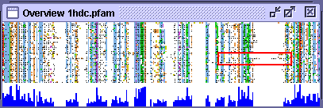

View→Overview window
Select the overview window menu item to get a navigable image of the whole alignment.
The red box indicates the currently viewed region of the alignment, this may be moved by clicking and dragging with the mouse.
